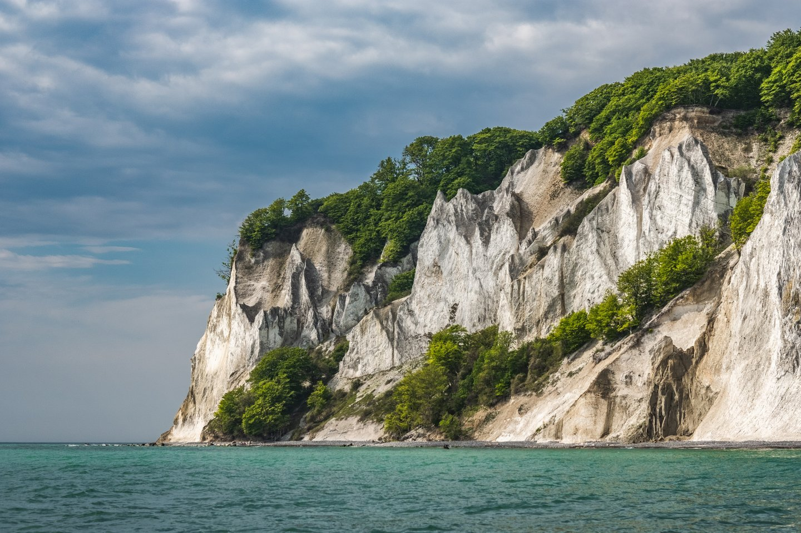

No es casualidad que los noruegos sean uno de los pueblos más felices del mundo.
Descubre el noble arte de lo 'kos', prueba su gastronomía única y singular,
o participa de las principales fiestas del país.
¡Y no tengas miedo de los fieros vikingos!
Seguro que acabas cogiéndoles cariño.
Si hubiera que usar una sola palabra par describir Noruega, esta sería “paisaje”.
El plato fuerte son los fiordos y las islas del norte.
Hay una gran tranquilidad,
aspecto muy positivo para algunos pero
que otros pueden calificar como “estar en el centro de la nada”.
En verano el clima de Noruega es muy agradable, aunque puede llover.
Lo más negativo, incluso en verano, es el frecuente viento fuerte en el norte del país.